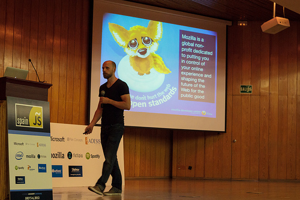
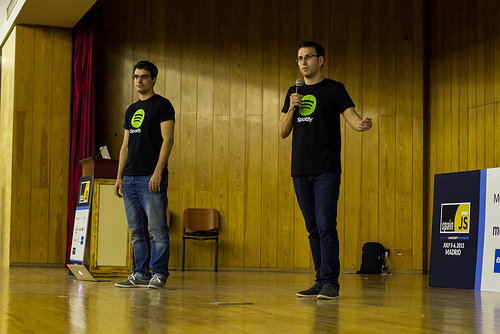
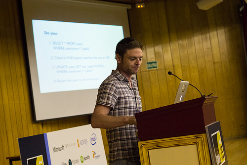
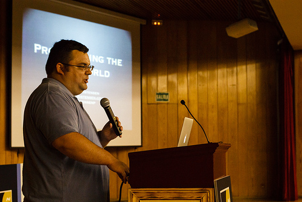
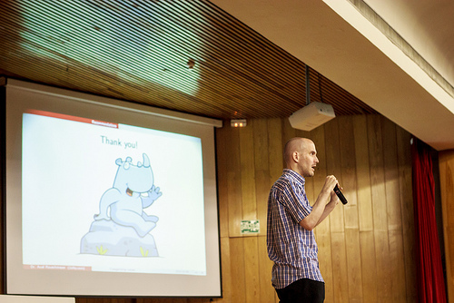

Functional testing with CasperJS
Vicenç García
Syntaxation
(Douglas Crockford)
From zero to hero! Building a Windows Store game in HTML5
(Girgo Sardo)
From web apps to hybrid mobile apps - Leveraging web technologies for making "native" mobile applications
(Martin Naumann)
Responsive Web Design: The Good Parts
(Leo Lanese)
Bringing the open web and APIs to mobile devices with Firefox OS
(Robert Nyman)

Cross-platform application development using web technologies
(Tomás Pérez & José M. Pérez)

La Hermosa Vida
(Reg Braithwaite)
Introduction to NoSQL with Couchbase
(Pablo Casado)

Programming the Real World: Javascript for Makers
(Peter Christensen)

Categorizing values: typeof, instanceof and beyond
(Axel Rauschmayer)

A particles system with the DOM
(Teddy Kishi)
SpiderMonkey Parser API: A Standard For Structured JS Representations
(Michael Ficarra)
Manage those dependencies!
(Jakob Mattsson)
A history: Node.js and serving billions of requests in the real world
(Tom Buchok)

Threedee Tales of Urban Bohemia
(Vicent Marti)

The Amazing Sounds of JavaScript
(Stuart Memo)
Hunting down memory leaks
(Jozsef Ferenc Pengo)